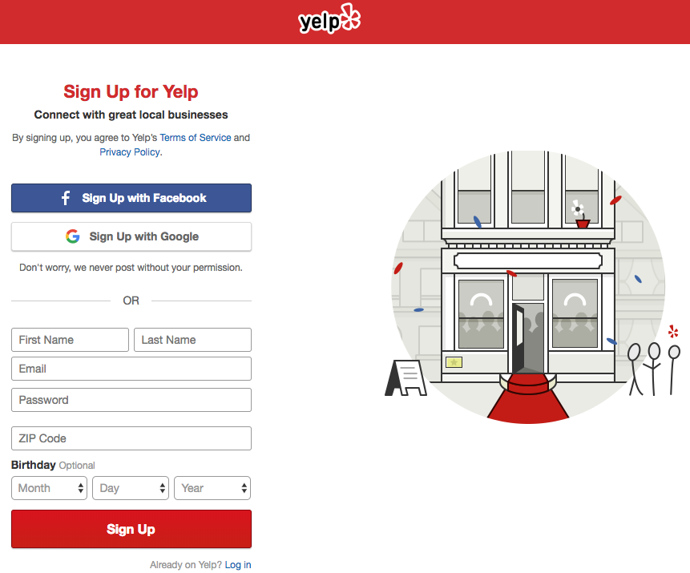
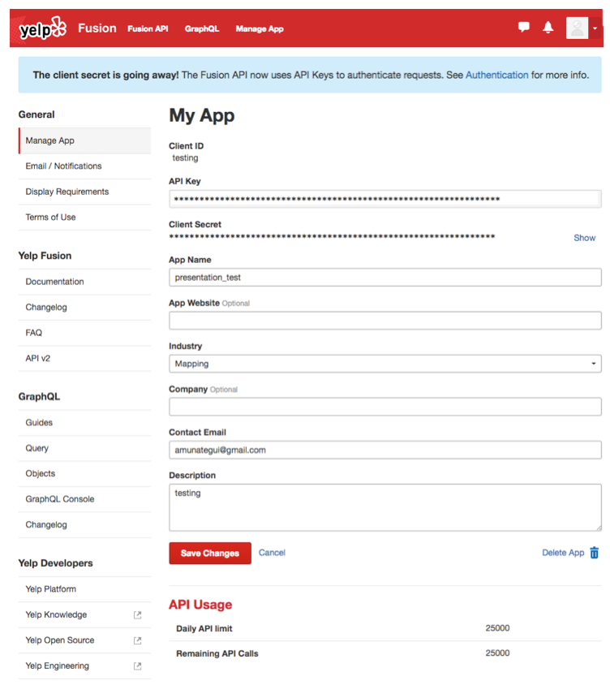
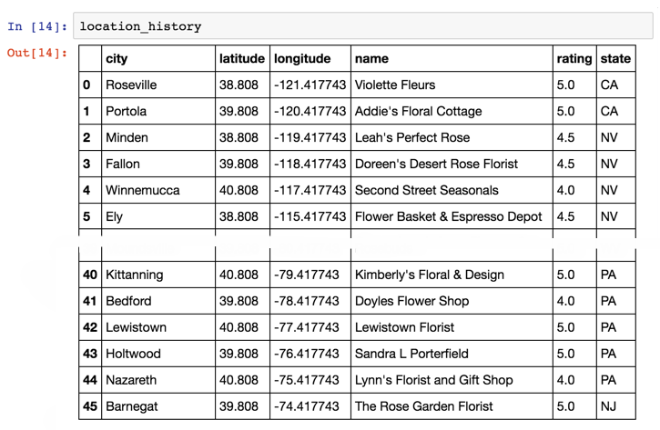

Yelp v3 and a Romantic Trip Across the USA, One Florist at a Time
Practical walkthroughs on machine learning, data exploration and finding insight.
On YouTube:


Just in time for Valentine’s Day, if you happen to be planning a trip across the United States and want to offer your companion a rose at every degree of latitude traveled, then this walk-through is for you!
The title says it all, we’re going to use the Yelp v3 API to cross the United States from San Francisco, CA to New York City, NY, and be 60 miles from a florist at all times. This is an updated take on the previous walk-though I did 3 years ago (see original here). This one uses the new Yelp v3 API and is written in Python. The second part will extend this into an interactive web-app on Google Cloud.
The review site, Yelp, should be known to most. It is listed as 'User Reviews and Recommendations of Best Restaurants, Shopping, Nightlife, Food, Entertainment, Things to Do, Services and More'. The latest Yelp v3 API is easier to use than the previous versions. Now you only need to pass your free API key, no more complicated auth stuff. Follow the two steps below and you're good to go:
- Sign Up for Yelp: https://www.yelp.com/signup
- Get an API Key: https://www.yelp.com/developers/v3/manage_app/
Sign Up for Yelp
Straightforward signup page requires a valid email address:

Get an API Key
Click on the Yelp developer's link and go to Manage App. You only need to add an App Name, Industry and contact email in order to generate a valid key. Note at the bottom where it indicates the daily API limit count.

If you want more details on Yelp's v3 API, check out Get started with Yelp's Fusion API
Let's Build This
We are going to create 3 functions and use a big loop to get from one end of the USA to the other, step-by-step:- GetPossibleCoordinates
- GetBestYelpLocation
- MakeAMove
GetPossibleCoordinates
This function takes the current position of our traveler and calculates its bounded box. The default bounded box unit is 1 degree (equates loosely around 60 miles), so we add 30 miles in all four directions from the current point to created the bounded square (making it a 1x1 degree box, or 60x60 miles box). It returns the next 2 possible moves, both forward and one higher, the other, lower (see image below).

GetBestYelpLocation
This takes a vector of two sets of geo-spatial coordinates, the upper left point and the lower right one, along with the search term and sends it to Yelp. It returns a data frame with the name, city, rating, state, latitude and longitude of the top location using the search term. It automatically picks the best one if available found in the new geo zone.MakeAMove
MakeAMove is the central relay that communicates with the other functions. It will get the next coordinates via GetPossibleCoordinates, figure out if it should try up or down first depending on where it is in relation to the end point’s latitude, and call on the Yelp API. If it finds a florist, it will report back the pertinent information such as the florist’s name, state, and coordinates. If it can’t find one, it will report back a None.And a Big A** Loop
The main logic is a big loop that loops one round for every move (and attempted moves) on the map. Here we set a search term florist, and a bounded square size unit, 1 degree in this case. made_it is the boolean flag that keeps the while loop going until we make it close to our final destination (or if we fail after x tries). time.sleep(0.5) will pause the code between each loop, this is critical so you don’t flood the Yelp server and get yourself banned.As code runs its course, it collects the Yelp data and geo-coordinates. The coordinates are feed into mpl_toolkits.basemap and displayed atop a map of the USA as scatter points. Each point obviously represents a florist. Gaps in points are areas where the model struggled to find a close-by florist. The final output is the log of the journey containing all the data collected from Yelp. Enjoy!

Full Source Code:
#!pip install geocoder
#!pip install --upgrade matplotlib
import pandas as pd
import json
import requests
import sys
import time
import urllib
import geocoder
import matplotlib.pyplot as plt
from mpl_toolkits.basemap import Basemap
import warnings
warnings.filterwarnings('ignore')
# source https://github.com/Yelp/yelp-fusion/blob/master/fusion/python/sample.py
# This client code can run on Python 2.x or 3.x. Your imports can be
# simpler if you only need one of those.
try:
# For Python 3.0 and later
from urllib.error import HTTPError
from urllib.parse import quote
from urllib.parse import urlencode
except ImportError:
# Fall back to Python 2's urllib2 and urllib
from urllib2 import HTTPError
from urllib import quote
from urllib import urlencode
def GetBestYelpLocation(host, path, api_key, term, latitude, longitude):
"""Given your api_key, send a GET request to the API.
Args:
host: domain host of the API.
path: path of the API after the domain.
api_key: API Key
term: search term
latitude: latitude
longitude: longitude
Returns:
DataFrame: top business found
"""
# build url paramaters to append to GET string
url_params = {
'term': term.replace(' ', '+'),
'latitude':latitude,
'longitude':longitude,
'limit': 1
}
# finalize
url_params = url_params or {}
url = '{0}{1}'.format(host, quote(path.encode('utf8')))
headers = {
'Authorization': 'Bearer %s' % api_key,
}
print(u'Querying {0} ...'.format(url))
response = requests.request('GET', url, headers=headers, params=url_params)
response = response.json()
rez = None
if response['total'] > 0:
rez = pd.DataFrame({"name":[response['businesses'][0]['name']],
'city':[response['businesses'][0]['location']['city']],
'rating':[response['businesses'][0]['rating']],
'latitude':[response['region']['center']['latitude']],
'longitude':[response['region']['center']['longitude']],
'state':[response['businesses'][0]['location']['state']]})
return (rez)
def GetPossibleCoordinates(lat, lon, area=1):
""" Get next sets of corrdinates to search
Args:
lat: latitude
lon: longitude
area: size of area to search
Returns:
DataFrame: top and bottom new geo zones
"""
# new forward top square area
topArea_latitude = lat + area
topArea_longitude = lon + area
# new forward bottom square area
bottomArea_latitude = lat - area
bottomArea_longitude = lon + area
# create a Pandas data frame to hold new seachable zones
rownames = ['new_top_area','new_bottom_area']
latitude_points= [topArea_latitude, bottomArea_latitude]
longitude_points = [topArea_longitude, bottomArea_longitude]
return (pd.DataFrame({'direction':rownames,
'latitude_point':latitude_points,
'longitude_point':longitude_points}))
def MakeAMove(lat, lon, sizebox, search_term, lat_endPoint):
""" coordinate travelers next move
Args:
lat: latitude
lon: longitude
sizebox: size of area to search
search_term: what business to query Yelp for
lat_endPoint: final destination latitude
Returns:
DataFrame: top business found
"""
possibleCoordinates = GetPossibleCoordinates(lat,lon,sizebox)
# go up or down first depending on latitude of end point
searchOrder = ['new_top_area','new_bottom_area']
if (lat > lat_endPoint):
searchOrder = ['new_bottom_area','new_top_area']
for directiontogo in searchOrder:
coords = possibleCoordinates[possibleCoordinates['direction']==directiontogo]
print('Scanning %s for term %s') % (directiontogo, search_term)
foundLocation = GetBestYelpLocation(host=API_HOST,
path=SEARCH_PATH,
api_key=API_KEY,
term=search_term,
latitude=coords['latitude_point'].values[0],
longitude=coords['longitude_point'].values[0])
if (foundLocation is not None):
return (foundLocation)
return (None)
# General Setup
# https://github.com/Yelp/yelp-fusion/blob/master/fusion/python/sample.py
API_KEY = '<YOUR YELP API KEY HERE>'
# API constants, you shouldn't have to change these.
API_HOST = 'https://api.yelp.com'
SEARCH_PATH = '/v3/businesses/search'
where = "Fishersman's Wharf, San Francisco, CA"
g = geocoder.google(where)
# lat long
startingpoint = g.latlng
print("Starting point: %s - %s" %(where, startingpoint))
time.sleep(1)
where = "Chelsea Piers, NY"
g = geocoder.google(where)
endingpoint = g.latlng
print("Ending point: %s - %s" %(where, endingpoint))
# wait for values to be returned
counter = 0
while (startingpoint is None or endingpoint is None):
time.sleep(0.5)
counter += 1
if counter > 5: break;
search_term = 'florist'
square_size = 1 # setting the bounded area to a square
# start trip info vectors - we need to remember where we've been!
currentLatitude = startingpoint[0]
currentLongitude = startingpoint[1]
made_it = False
safety_count = 0
foundCount = 0
location_history = None
while (made_it == False):
safety_count += 1
foundLocation = MakeAMove(lat=currentLatitude,
lon=currentLongitude,
sizebox=square_size,
search_term=search_term,
lat_endPoint = endingpoint[0])
if foundLocation is not None:
print (('Our new %s is %s in %s, %s %f start rating') % (search_term,
foundLocation['name'].values[0],
foundLocation['city'].values[0],
foundLocation['state'].values[0],
foundLocation['rating'].values[0]))
currentLatitude = foundLocation['latitude'].values[0]
currentLongitude = foundLocation['longitude'].values[0]
if (location_history is None):
location_history = foundLocation.copy()
else:
location_history = location_history.append(foundLocation, ignore_index=True)
# reset temporary setting
square_size = 1
# let's keep track how our successes!
foundCount += 1
else:
# increase square_size
print(("Can't find any %s, enlarging square search area to %i") % (search_term, square_size + 1))
# temporary settings to get us out of desert
square_size += 1
# have we arrived at our end point
if (currentLongitude < (endingpoint[1] + square_size)) and (currentLongitude > (endingpoint[1] - square_size)):
print(('We made it!! It took %i hops...') % (foundCount))
break;
if (safety_count > 100):
print(('Giving up!! Failed after %i hops') % (foundCount))
break;
# be considerate with your Yelp requests
time.sleep(0.5)
# plot map of journey
plt.figure(figsize=(23,10))
# build usa map
m = Basemap(projection='mill',
llcrnrlat = 25,
llcrnrlon = -130,
urcrnrlat = 50,
urcrnrlon = -60,
resolution='l')
# plot lat/long cross-country journey and add starting and ending points
lon_prox = [startingpoint[1]] + list(location_history['longitude']) + [endingpoint[1]]
lat_prox = [startingpoint[0]] + list(location_history['latitude']) + [endingpoint[0]]
x,y=m(lon_prox, lat_prox)
m.scatter(x, y, s=200, zorder=10, alpha=1)
m.drawcoastlines()
m.drawcountries(linewidth=2)
m.drawstates(color='b')
plt.legend(loc=4)
plt.title('Yelp Cross-Country Adventure')
plt.show()
print(location_history)
As usual, a big shout-out to Lucas Amunategui for providing great original art for these walk-throughs.